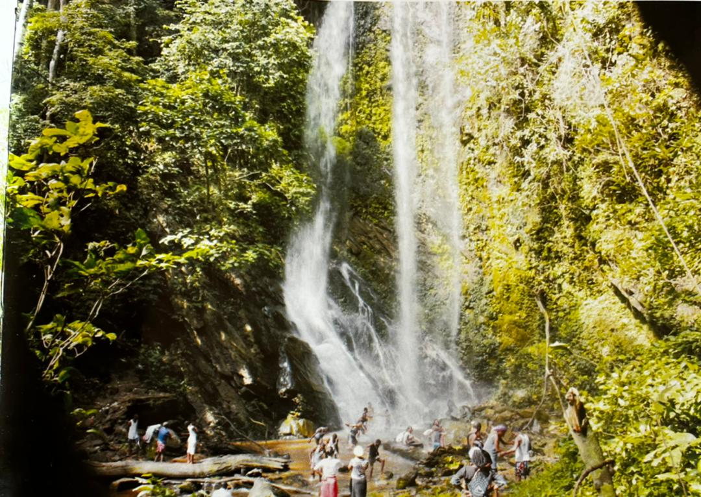

About Osun

Osun State was created following series of pressure mounted on the federal military government over
a long period of time by the founding fathers,
most of whom are traditional rulers and community leaders.
Col. Ajiborisa pioneered the new State between August 1991 and January 1992,
when an election was conducted under the zero party
system which was introduced by then Military President Ibrahim Babangida.
It was that election that saw the emergence of Alhaji Isiaka Adetunji Adeleke as the governor of the sate.
As the first Executive Governor of the State…

Yoruba tradition has it that Ile-Ife in the State of Osun is where Olodumare started the creation of the world.
It represents the beginning of life, the birthplace of civilization,
the embodiment of all that we see or feel. Osun is the ancestral home of the Yoruba Race whether home or abroad.
It is the central and most important location of this morally rich,
culturally sound and highly sophisticated race in the world.
It represents the spiritual,
the physical and the technological.
Tour
for the first time? get familiar with amazing places
you can tour around Osun State Nigeria.
Contact
State Government Secretariant Abeere, Osogbo
Osun State Nigeria.
Email:admin@osunstate.gov.ng
Osun on Facebook
Osun on Instagram
Osun on Twitter